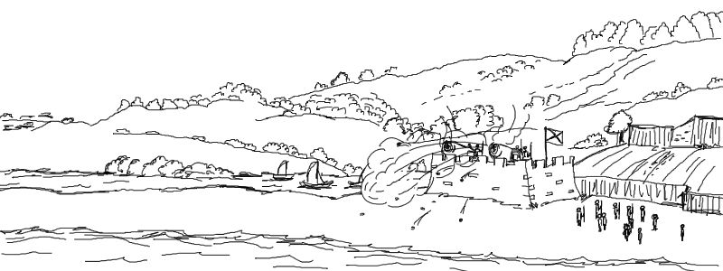
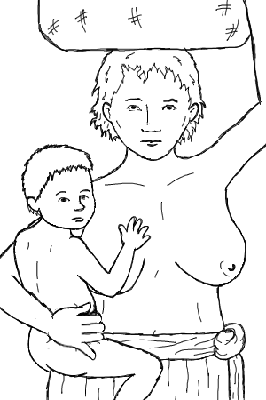
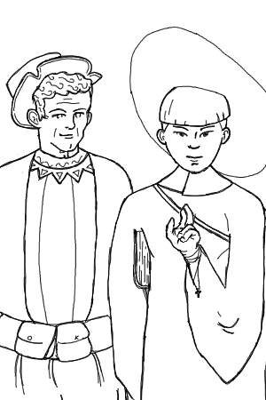

🦀 Miscigenação
🦀 Miscigenação
Um dia, o governador de Pernambuco mandou que se separassem vários vasos de vinho e convidou o líder de cada aldeia caeté dos arredores de Olinda para um encontro na câmara da vila. Lá compareceram os líderes dos lugares onde hoje estão Olinda, Recife, Jaboatão, Cabo e Igarassu. Cada líder recebeu um intérprete de tupi fiel aos portugueses que beberia junto a eles o vinho servido, passando a confiança de que não se tratava de um envenenamento.
Então, no meio daquela recepção, foi comunicado aos líderes nativos que os portugueses gostariam de iniciar uma guerra contra os tabajaras, inimigos deles, os caetés, e que precisariam de sua ajuda. Porém, corria entre os próprios nativos das redondezas de Olinda uma história de que alguns homens caetés estariam sequestrando, estuprando e às vezes matando mulheres, crianças portuguesas e alguns dos escravos dessas famílias. O governador os comunicou que tinha medo que na saída dos homens portugueses para guerra, esses caetés criminosos se aproveitasse e fizessem mal às suas famílias. Para isso, antes de partirem, o governador gostaria de saber quem eram esses indivíduos criminosos, a fim de puni-los e agraciar os denunciantes com recompensas.
Depois de ter se servido muito vinho, os líderes das aldeias começaram a acusar uns aos outros e a discussão daí logo tornou-se pancadaria. Tudo saíra do jeito que o governador queria. Da pancadaria logo vieram as primeiras mortes: com suas flechas feriram uns aos outros e só aí veio a intervenção da câmara de Olinda. Os portugueses prenderam todos e depois averiguou-se quem havia de fato cometido os crimes contra os portugueses. Encontrando os culpados, prenderam-nos nas bocas de canhões e dispararam-nos, fazendo voar seus pedaços na frente dos acusadores.
Depois do espetáculo, curiosamente, os líderes sobreviventes foram os habitantes do Cabo e das terras interiores às várzeas do Capibaribe, que para lá voltaram, deixando abaladas todas as populações agora sem seus líderes. Para completar, os portugueses se deram o direito de reconhecer todas as terras agora em “vácuo” de liderança como suas.
Os caetés, ao mesmo tempo que tratavam de manter vizinhança com os portugueses, mantinham-na também com os franceses e isso aumentaria a resistência nativa contra Portugal nos anos a vir, pois se engana quem acredita que os portugueses respeitariam afinal os sobreviventes da festa do vinho. Em uma questão de tempo, eles também seriam perseguidos.
Com tanta terra “disponível”, era preciso agora ocupá-la. É importante notar que mesmo com alguns anos de invasão branca, os europeus não chegavam nem perto de ultrapassar os habitantes nativos em número. Nem população branca para compor uma cidade ainda havia em Pernambuco pelo fim do século 16.
Visto que havia uma considerável integração, um maior diálogo, entre os franceses e os nativos, na época da chegada de Duarte Coelho em Olinda, os contemporâneos todos tratavam a aldeia por Marim, que é uma corruptela das palavras do francês marin (marinheiro) e mairie (cidade), ou seja, o modo como os franceses chamavam a aldeia foi adotado pelos próprios moradores. Se os moradores da taba (aldeia) se chamavam tabajaras ou tabaiaras, os moradores de Marim eram mairiaras¹.
Os maus-tratos que resultaram em inimizades por todo o território brasileiro mantiveram os portugueses isolados em suas vilas por muito tempo. Mesmo assim, algumas nações nativas amigas traziam mantimentos e ajudaram no estabelecimento dos dominantes. Observando esses gestos, os portugueses decidiram por convidar as filhas de líderes nativos amigos para casar, à maneira cristã, com seus brancos.
Não conhecemos ou entendemos plenamente a dinâmica familiar desses povos nativos pernambucanos, mas temos todas as descrições possíveis dos dogmas cristãos que regiam o comportamento dos homens brancos desse tempo. E eles, assim como hoje, não eram plenamente seguidos. Registrou o padre Manuel da Nóbrega:
Os mais aqui tinham índias de muito tempo, de que tinham filhos, e tinham por grande infâmia casarem-se com elas. Agora se vão casando e tomando vida de bom estado.
As tripulações portuguesas, em sua maioria de homens, relacionavam-se com nativos, comumente com estupros, e sempre justificando suas ações como se as mulheres nativas fossem “tentações insuportáveis”.
As índias livres, que há muito tempo andam com cristãos em pecado, trabalhamos por remediar para não se irem ao sertão, já que são cristãs […]
Isso porque caso fossem acusadas de adultério, por serem convertidas ao cristianismo e se relacionarem com homens muitas vezes casados, eram afastadas das proximidades das vilas e afugentadas para o sertão (o interior ainda não ocupado pelos portugueses. No caso de Recife, a zona da mata já era considerada sertão).
Quase todos [os homens] tem negras livres do gentio e quando querem se vão os seus [povos]. […] O sertão está cheio de filhos de cristãos [homens brancos], grandes e pequenos, machos e fêmeas, vivendo e se criando nos costumes do gentio.
Jerônimo de Albuquerque, cunhado de Duarte Coelho, arranjou casamento com a filha de um dos líderes tabajaras. Seu nome era Muirá Ubi (arco verde) e após o casamento, foi batizada Maria do Espírito Santo Arcoverde. Sim, ela é a ancestral dessa família e deu nome a cidade pernambucana. Também desse casamento descenderam as famosas famílias pernambucanas: os Albuquerque e os Cavalcanti.
Esse casamento permitiu um apaziguamento dos conflitos com as populações revoltosas, amigas dos Arcoverde, e formalizou um novo meio de configuração social. Com o nobre Jerônimo, tão próximo do governador, casando-se com uma nativa, outras relações se oficializariam em casamento. Tudo isso era bom para os invasores: as aldeias se tornariam amigas mais facilmente, haveria mais cristãos convertidos que poderiam agora converter outros na sua língua e, o mais impactante, as lideranças nativas passariam a compor a nobreza portuguesa. Esse movimento não acontecera apenas em Pernambuco, mas por todo o Brasil.

Com os filhos desses casamentos, estupros e adultérios, inicia-se em Pernambuco uma nova geração de pessoas nascidas na terra mas com pais originais de povos diferentes. Eles tanto vão tanto ocupar posições burocráticas importantes em Olinda e nos engenhos que nasciam, quanto vão viver a vida como rebeldes bastardos.
Com o crescimento do tamanho da população apta a iniciar seus negócios, tanto os nobres brasileiros (os filhos dos casamentos oficializados entre brancos e nativos), quanto os europeus que acabaram por se fixar em Pernambuco, popularizariam os engenhos de açúcar por todo esse espaço agora “vago” sob a visão portuguesa. É possível que tenha havido resistência caeté, mas agora passível de extermínio com a força portuguesa.
Neste momento, a burocracia olindense, uma crescente vertente do reforço local das vontades da coroa portuguesa, agora criava justificativas para a tomada das terras pelos portugueses. A estratégia portuguesa foi a de envolver os nativos na política branca, posições muito pretendidas por boa parte deles, uma vez que passariam a ter poder de decisão nos conflitos entre as aldeias, por exemplo. Os portugueses descobriram, assim, uma forma de reproduzir a tradição daqueles dos nativos de conquista e expandiram muito rápido seus domínios. As populações que decidiram se aliar aos portugueses não estavam interessadas no conforto da vida europeia de acesso aos bens da metrópole e não tinham, em sua maioria, medo algum de tornarem-se contrárias à sua conquista se necessário fosse.
As aldeias tornaram-se fazendas de trato de pau-brasil, engenhos de açúcar e de produção de algodão, com escravos que eram cativos de aldeias inimigas e também os africanos recém chegados da Guiné e de Angola. As aldeias tornaram-se indústrias de exportação para Portugal geridas pelos brancos e nativos e administradas pela burocracia residente em Olinda. Também é importante anotar que os nativos não possuiam interesse nem naqueles bens produzidos, nem no pagamento daquele serviço, uma vez que a noção de economia, de lucro e do uso do dinheiro, ainda se introduzia nos nativos, teatralmente disfarçada no estabelecimento daquelas fazendas produtoras, a fim de, discutivelmente, mostrarem-se superiores as aldeias que não eram aliadas aos portugueses. Por causa dessas mudanças, a vila de Olinda cresceu ainda mais, estabelecendo-se definitivamente capital de Pernambuco e cidade mais rica e importante de todo o território colonial português no Brasil.
As várzeas do Capibaribe se transformaram em engenhos mas mantendo as características habitacionais indígenas, inicialmente. Com a influência dos jesuitas e a tradição católica como um todo, as aldeias ganharam também capelas para as práticas religiosas. Passou a atender a Olinda, a freguesia da Várzea do Capibaribe , que compreendia toda a região irrigada pelo rio que lhe deu nome. Ainda iria compor o Recife atual a freguesia do Corpo Santo que trataremos mais a frente.
Como enumera a obra Nobiliarchia Pernambucana de 1935, ao fim do século 16, habitavam nas várzeas e em Olinda famílias como as de Jerônimo de Albuquerque com Maria do Espírito Santo Arcoverde, a família dos Carvalhos, Araújos Pereiras, Athaydes, Barbosas, Bezerras “Felpa de Barbuda”, Bezerras “Jacomes”, Barbalhos Silveiras, Carvalhos de Megaó, Tenórios, Souzas, Carrascos, Lins, Rochas Dantas, Marinhos, Marreiros, Barbalhos, Uchoas, Pessoas, Bezerras Barrigas, Bandeiras, Vieiras de Mello, Vasconcellos entre outras, muitas delas famílias mestiças batizadas com nomes portugueses.
Passaram a trabalhar nos engenhos dessas famílias grande número de escravos. Aos nativos, juntaram-se os africanos. Lembrem-se: ambos os povos considerados pelos europeus como gente sem valor, necessários apenas para o serviço doméstico e braçal. As almas, da América e da África, foram batizadas, forçosamente convertidas ao cristianismo, e impedidas de proferir suas religiões e costumes originais. Os nativos foram mais tolerantes aos jesuítas, quem, por sua vez, cunharam os costumes nativos como sendo feitiçaria, rebaixando-os a inferiores perante a sociedade europeia daquela época. Os religiosos brancos tinham a simpatia e bom tratamento dos líderes nativos, uma vez que os jesuítas eram responsáveis por acolher o indígena expulso da sua terra original, tornando-se atuantes num processo de suavização da colonização. Entretanto, as atitudes desses religiosos serviram apenas como ferramenta de aceleração na tomada das terras pelos europeus.
Acontece que por mais simpática e permissiva que pudesse ser a população nativa, essas pessoas nunca viriam a ser de fato integradas à sociedade, como experimentava o branco europeu. Por mais miscigenada que fosse a população brasileira, ela só existia como agente de produção para a exportação de bens, desde a sua concepção. De forma não declarada, não havia escolha: era ou se aliar ou ter suas vidas tiradas pelos portugueses. Aos poucos, foi-se formando uma elite local com a distribuição de títulos burocráticos e de nobreza à população mestiça a fim de simular uma estima portuguesa, títulos esses muitas vezes inventados. A distância física de Portugal a Pernambuco dificultava a ida desses nobres à metrópole, assim permitindo a criação dessa nobreza à brasileira, que apenas servia para acalorar a produção e estimular a vida de servidão no Brasil. Um legítimo golpe na soberania das populações nativas, cuja originalidade foi sendo culturalmente reprimida pouco a pouco.
Esse texto trata do início da criação de uma nova classe marcadamente mestiça no primeiro século de invasão. Observando os modos como esse evento se deu, torna-se mais perceptível porque as pessoas que se entitulam pardas se leem brancas ou racializadas quando lhes convém. É interessante observar que todos os mecanismos descritos no texto podem ser trazidos ao tempo presente. A vida de servidão e a nobreza à brasileira, aqueles nobres que se comunicam com dificuldade com os nobres do exterior, continuam a existir.
É importante salientar também que o levante dessa nova classe paradoxalmente humilha e escraviza seus próprios. No futuro, acrescentam-se ainda os descendentes das relações afrobrasileiras e afroeuropeias que, como filhos da servidão, permanecerão subjulgados.
É uma classe criada para não pertencer. Ela não se vê da terra, nem portuguesa. Ela se identifica com o que é adverso a ela própria. Ela apenas quer pertencer a quem a ensinou a ser quem ela mesmo é, mas não é possível abandonar suas raízes e assim será até que ela consiga se identificar consigo e se solte das correntes que a fazem pensar que sua vida não é aqui e nem que ela não pertence à sua própria terra.